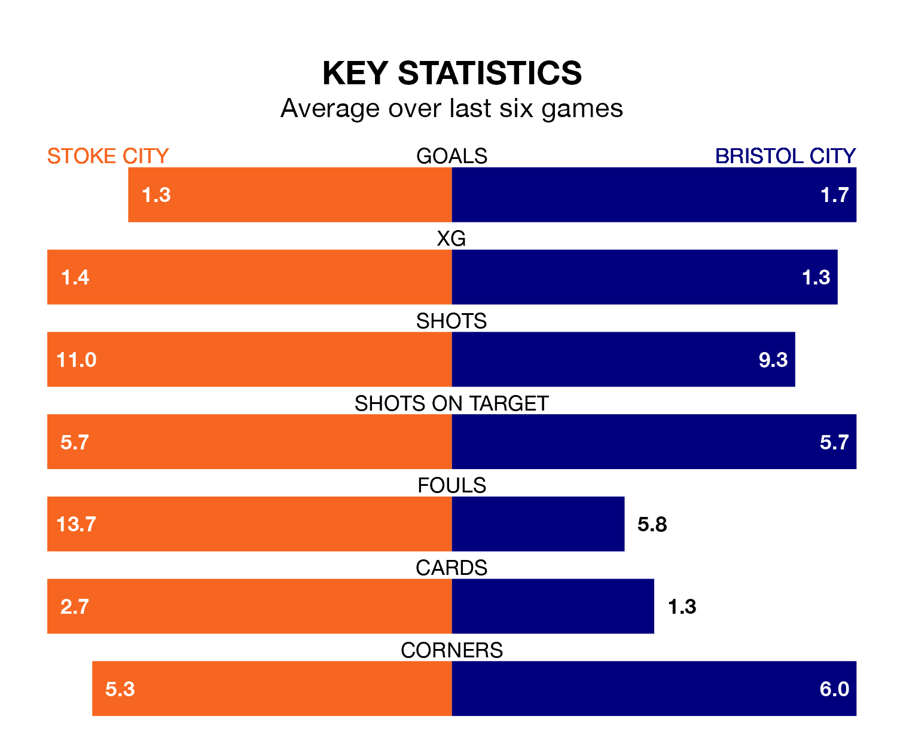

Bristol City face Stoke City on Saturday seeking to protect their long unbeaten run in EFL Championship.
The Robins are unbeaten in seven, with four wins and three draws, ahead of the 12.30pm kick-off.
They face a Stoke team who have won three and drawn three over the same number of games.
In the last 10 years, Stoke and Bristol City have played each other on 12 occasions. Stoke won four of them, Bristol City seven, and they drew once.
On average, the Potters scored 0.9 goals and the Robins 1.3 in those matches.
Their last meeting was on September 30, when Stoke won 3-2 away.
With Max O’Leary between the sticks, Bristol City can rely on one of the league's safest pair of hands. He has kept 13 clean sheets in his 45 appearances this season in EFL Championship.
In Stoke's net, Jack Bonham has five clean sheets in 14 games. He has conceded a goal every 84 minutes, 10% more often than the 96 minutes between goals for O’Leary.
Stoke City are 18th in the table after 45 games, of which they have won 14 and drawn 11, earning 53 points.
The Robins are seven places ahead of the Potters in 11th, with 17 wins and 11 draws putting them on 62 points.
With 45 goals in 45 games so far this season, the hosts are scoring at below the league average rate with 1.0 goals per game. And they are conceding at an average rate, letting in 60 goals at a rate of 1.3 per game.
The away side are also below average scorers, with 1.2 goals per game, compared to a league average of 1.3. They have conceded 1.0 goal per game.
Stoke's last match was on Saturday, a 1-0 win against Southampton, with Tyrese Campbell getting the goal for the Potters.
Bristol City beat Rotherham United 2-0 last time out, also on Saturday, with Scott Twine and Tommy Conway on the scoresheet.
Updated: 12:00 (UTC), 02/05/24